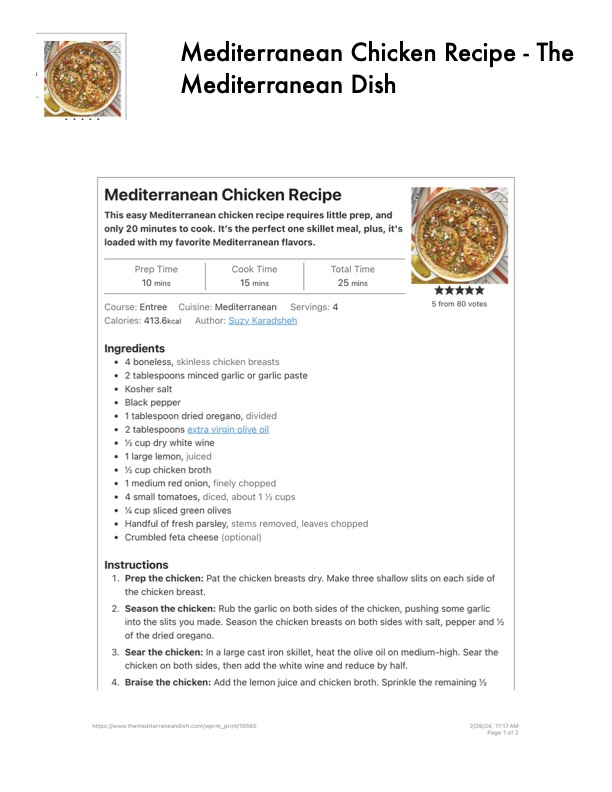

Mediterranean Chicken Recipe - The

Original cookbook page 533
Ingredients
- * Aboneless, skinless chicken breasts
- 2 tablespoons minced garlic or garlic paste
- * Kosher salt
- Black pepper
- * 1 tablespoon dried oregano, divided
- 2 tablespoons extra virgin olive oil
- % cup dry white wine
- * 1 large lemon, juiced
- * % cup chicken broth
- 1medium red onion, finely chopped
- 4small tomatoes, diced, about 1% cups
- '% cup sliced green olives
- Handful of fresh parsley, stems removed, leaves chopped
- Crumbled feta cheese (optional)
Instructions
- Prep the chicken: Pat the chicken breasts dry. Make three shallow slits on the chicken breast.
- Season the chicken: Rub the garlic on both sides of the chicken, pushing s into the slits you made. Season the chicken breasts on both sides with salt, of the dried oregano.
- Sear the chicken: In a large cast iron skillet, heat the olive oil on medium-h chicken on both sides, then add the white wine and reduce by half.
- Braise the chicken: Add the lemon juice and chicken broth. Sprinkle the rer https:/[ivww.themediterraneandish.com/wprm_print/10565
Recipe #533 from collection